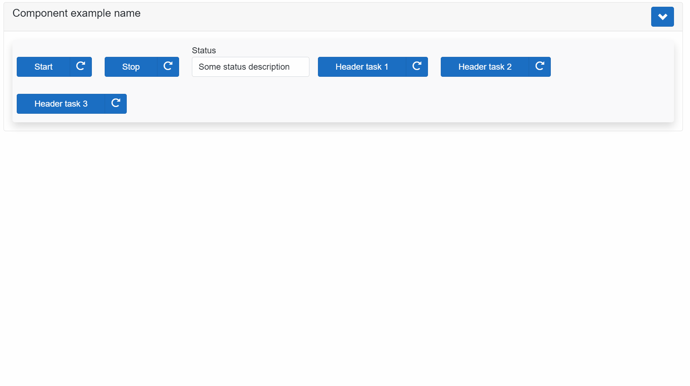

AxoComponent
AxoComponent is an abstract class extending the AxoObject, and it is the base building block for the "hardware-related devices" like a pneumatic piston, servo drive, robot, etc., so as for the, let's say, "virtual devices" like counter, database, etc. AxoComponent is designed to group all possible methods, tasks, settings, and status information into one consistent class. As the AxoComponent is an abstract class, it cannot be instantiated and must be extended. In the extended class, two methods are mandatory.
Restore() - inside this method, the logic for resetting the AxoComponent or restoring it from any state to its initial state should be placed.
ManualControl() - inside this method, the logic for manual operations with the component should be placed. To be able to control the AxoComponent instance manually, the method ActivateManualControl() of this instance needs to be called cyclically.
The base class contains two additional method to deal with the manual control of the AxoComponent.
ActivateManualControl() - when this method is called cyclically, the AxoComponent changes its behavior to manually controllable and ensure the call of the ManualControl() method in the derived class.
IsManuallyControllable() -returns TRUE when the AxoComponent is manually controllable.
Layout attributes ComponentHeader and ComponentDetails
The visual view of the extended AxoComponent on the UI side could be done both ways. Manually with complete control over the design or by using the auto-rendering mechanism of the RenderableContentControl (TODO add a link to docu of the RenderableContentControl) element, which is, in most cases, more than perfect.
To take full advantage of the auto-rendering mechanism, the base class has implemented the additional layout attributes ComponentHeader and ComponentDetails(TabName). The auto-rendered view is divided into two parts: the fAxoed one and the expandable one.
All AxoComponent members with the ComponentHeader layout attribute defined will be displayed in the fixed part.
All members with the ComponentDetails(TabName) layout attribute defined will be displayed in the expandable part inside the TabControl with "TabName".
All members are added in the order in which they are defined, taking into account their layout attributes like Container(Layout.Wrap) or Container(Layout.Stack).
How to implement AxoComponent
Example of the implementation very simple AxoComponent with members placed only inside the Header.
{#ix-attr:[Container(Layout.Stack)]}
{#ix-set:AttributeName = "AxoComponent with header only example"}
CLASS PUBLIC AxoComponentHeaderOnlyExample EXTENDS AXOpen.Core.AxoComponent
METHOD PROTECTED OVERRIDE Restore: IAxoTask
// Some logic for Restore could be placed here. For Example:
valueReal := REAL#1.0;
valueDint := DINT#0;
END_METHOD
METHOD PROTECTED OVERRIDE ManualControl
// Some logic for manual control could be placed here.
;
END_METHOD
// Main method of the `AxoComponent` that must be
// called inside the `AxoContext` cyclically.
METHOD PUBLIC Run
// Declaration of the input and output variables.
// In the case of "hardware-related" `AxoComponent`,
// these would be the variables linked to the hardware.
VAR_INPUT
inReal : REAL;
inDint : DINT;
END_VAR
VAR_OUTPUT
outReal : REAL;
outDint : DINT;
END_VAR
// This must be called first.
SUPER.Open();
// Place the custom logic here.
valueReal := valueReal * inReal;
valueDint := valueDint + inDint;
outReal := valueReal;
outDint := valueDint;
END_METHOD
VAR PUBLIC
{#ix-attr:[Container(Layout.Wrap)]}
{#ix-attr:[ComponentHeader()]}
{#ix-set:AttributeName = "Real product value"}
valueReal : REAL := REAL#1.0;
{#ix-attr:[ComponentHeader()]}
{#ix-set:AttributeName = "Dint sum value"}
valueDint : DINT:= DINT#0;
END_VAR
END_CLASS
How to use AxoComponent
The instance of the extended AxoComponent must be defined inside the AxoContext.
CLASS ComponentHeaderOnlyExampleContext EXTENDS AxoContext
VAR PUBLIC
{#ix-set:AttributeName = "Very simple component example with header only defined"}
MyComponentWithHeaderOnly : AxoComponentHeaderOnlyExample;
{#ix-set:AttributeName = "<#Activate manual control#>"}
ActivateManualControl : BOOL;
inHwReal : REAL := REAL#1.0001;
inHwDint : DINT := DINT#1;
outHwReal : REAL;
outHwDint : DINT;
END_VAR
METHOD PROTECTED OVERRIDE Main
// The `Initialize()` method must be called before any other method.
MyComponentWithHeaderOnly.Initialize(THIS);
// Example of the activation of the manual control.
IF ActivateManualControl THEN
MyComponentWithHeaderOnly.ActivateManualControl();
END_IF;
// Calling the main method `Run` with respective input and output variables.
MyComponentWithHeaderOnly.Run(inReal := inHwReal,
inDint := inHwDint,
outReal => outHwReal,
outDint => outHwDint);
END_METHOD
END_CLASS
Inside the Main() method of the related AxoContext following rules must be applied. The Initialize() method of the extended instance of the AxoComponent must be called first.
The Run() method with the respective input and output variables must be called afterwards.
How to visualize AxoComponent
On the UI side use the RenderableContentControl and set its Context according the placement of the instance of the AxoComponent.
<RenderableContentControl
Context="@Entry.Plc.myComponentHeaderOnlyExample.MyComponentWithHeaderOnly"
Presentation="Command" />
The rendered result should then looks as follows:

In case of more complex AxoComponent the most important members should be placed in the fixed part (Header) and the rest of the members should be placed inside the expandable part (Details). The members inside the expandable part should be organize inside the tabs.
More complex AxoComponent
Example of the implementation more complex AxoComponent with members placed also in several tabs inside the expandable part (Details).
{#ix-attr:[Container(Layout.Stack)]}
{#ix-set:AttributeName = "AxoComponent example name"}
CLASS PUBLIC AxoComponentExample EXTENDS AXOpen.Core.AxoComponent
METHOD PROTECTED OVERRIDE Restore: IAxoTask
;
END_METHOD
METHOD PROTECTED OVERRIDE ManualControl
;
END_METHOD
METHOD PUBLIC Run
VAR_INPUT
inReal : REAL;
inDint : DINT;
END_VAR
VAR_OUTPUT
outReal : REAL;
outDint : DINT;
END_VAR
// This must be called first.
SUPER.Open();
// Place the custom logic here.
Status.SomeStatusValue1 := Status.SomeStatusValue1 * inReal;
Status.SomeStatusValue2 := Status.SomeStatusValue2 + inDint;
outReal := Status.SomeStatusValue1;
outDint := Status.SomeStatusValue2;
END_METHOD
VAR PUBLIC
// Complete structure as a part of the component header.
// All structure members are going to be displayed in the component header.
{#ix-attr:[Container(Layout.Wrap)]}
{#ix-attr:[ComponentHeader()]}
Header : Header_ComponentExample;
// Two separate tasks as a part of the component header.
// These tasks are going to be added to the previous members of the component header.
{#ix-attr:[ComponentHeader()]}
{#ix-set:AttributeName = "Header task 1"}
HeaderTask1 : AxoTask;
// Complete structure as a part of the component details tab `Tasks`.
// All structure members are going to be added to the previous members of the component details tab `Tasks`.
{#ix-set:AttributeName = "Tasks"}
{#ix-attr:[Container(Layout.Stack)]}
Tasks : Tasks_ComponentExample;
// Single task as a part of the component details tab `Tasks`.
// This task is going to be displayed in the component details tab `Tasks`
{#ix-attr:[ComponentDetails("Tasks")]}
{#ix-attr:[Container(Layout.Stack)]}
{#ix-set:AttributeName = "Detail task in Tasks tab"}
DetailTaskInTasksTab : AxoTask;
// Additional separate task as a part of the component header.
// This task is going to be added to the previous members of the component header.
{#ix-attr:[ComponentHeader()]}
{#ix-set:AttributeName = "Header task 2"}
HeaderTask2 : AxoTask;
// Complete structure as a part of the component details tab `Status` as the attribute [ComponentDetails("Status")]
// is defined on the class Status_ComponentExample.
// All structure members are going to be added to the previous members of the component details tab `Status`.
{#ix-set:AttributeName = "Status class"}
Status :Status_ComponentExample;
// Single variable as a part of the component details tab `Status`.
// This variable is going to be added to the previous members of the component details tab `Status`.
{#ix-attr:[ComponentDetails("Status")]}
{#ix-attr:[Container(Layout.Stack)]}
{#ix-set:AttributeName = "Status string"}
Status2 : string;
// Additional separate task as a part of the component header.
// This task is going to be added to the previous members of the component header.
{#ix-attr:[ComponentHeader()]}
{#ix-set:AttributeName = "Header task 3"}
HeaderTask3 : AxoTask;
// Complete structure as a part of the component details tab `Settings` as the attribute [ComponentDetails("Settings")]
// is defined on the class Settings_ComponentExample.
// All structure members are going to be added to the previous members of the component details tab `Settings`.
{#ix-set:AttributeName = "Settings"}
Settings : Settings_ComponentExample;
// Complete structure as a part of the component details tab `Diagnostics` as the attribute [ComponentDetails("Diagnostics")]
// is defined on the class Diagnostics_ComponentExample. git
// All structure members are going to be added to the previous members of the component details tab `Diagnostics`.
{#ix-set:AttributeName = "Diagnostics"}
Diagnostics : Diagnostics_ComponentExample;
// Complete structure as a part of the component details tab `Help` as the attribute [ComponentDetails("Help")]
// is defined on the class Help_ComponentExample.
// All structure members are going to be added to the previous members of the component details tab `Help`.
{#ix-set:AttributeName = "Help"}
Help : Help_ComponentExample;
END_VAR
END_CLASS
For the complex types of the AxoComponent it is also recomended to organize partial groups of the members into the classes as it is in this example.
CLASS PUBLIC Header_ComponentExample
VAR PUBLIC
{#ix-set:AttributeName = "Start"}
Start : AxoTask;
{#ix-set:AttributeName = "Stop"}
Stop : AxoTask;
{#ix-set:AttributeName = "Status"}
Status : STRING:='Some status description';
END_VAR
END_CLASS
{#ix-attr:[Container(Layout.Stack)]}
{#ix-attr:[ComponentDetails("Tasks")]}
CLASS PUBLIC Tasks_ComponentExample
VAR PUBLIC
{#ix-set:AttributeName = "Some status value 1"}
SomeStatusValue1 : REAL := REAL#45.3;
{#ix-set:AttributeName = "Some advanced component task 1"}
SomeAdvancedComponentTask1 : AxoTask;
{#ix-set:AttributeName = "Some advanced component task 2"}
SomeAdvancedComponentTask2 : AxoTask;
{#ix-set:AttributeName = "Some advanced component task 3"}
SomeAdvancedComponentTask3 : AxoTask;
{#ix-set:AttributeName = "Some advanced component task 4"}
SomeAdvancedComponentTask4 : AxoTask;
{#ix-set:AttributeName = "Some advanced component task 5"}
SomeAdvancedComponentTask5 : AxoTask;
END_VAR
END_CLASS
{#ix-attr:[Container(Layout.Stack)]}
{#ix-attr:[ComponentDetails("Status")]}
CLASS PUBLIC Status_ComponentExample
VAR PUBLIC
{#ix-set:AttributeName = "Some status value 1"}
SomeStatusValue1 : REAL := REAL#45.3;
{#ix-set:AttributeName = "Some status value 2"}
SomeStatusValue2 : DINT := DINT#46587;
{#ix-set:AttributeName = "Some status value 3"}
SomeStatusValue3 : STRING := 'some description';
END_VAR
END_CLASS
{#ix-attr:[ComponentDetails("Settings")]}
{#ix-attr:[Container(Layout.Stack)]}
CLASS PUBLIC Settings_ComponentExample
VAR PUBLIC
{#ix-set:AttributeName = "Some setting value 1"}
SomeSettingValue1 : REAL := REAL#45.3;
{#ix-set:AttributeName = "Some setting value 2"}
SomeSettingValue2 : DINT := DINT#46587;
{#ix-set:AttributeName = "Some setting value 3"}
SomeSettingValue3 : STRING := 'some setting';
END_VAR
END_CLASS
{#ix-attr:[ComponentDetails("Diagnostics")]}
{#ix-attr:[Container(Layout.Stack)]}
CLASS PUBLIC Diagnostics_ComponentExample
VAR PUBLIC
{#ix-set:AttributeName = "Some diagnostic message"}
SomeDiagnosticMessage : STRING := 'TODO: Some diagnostic message needs to be placed here';
END_VAR
END_CLASS
{#ix-attr:[ComponentDetails("Help")]}
{#ix-attr:[Container(Layout.Stack)]}
CLASS PUBLIC Help_ComponentExample
VAR PUBLIC
{#ix-set:AttributeName = "Some help"}
SomeHelp : STRING := 'TODO: Provide some help';
END_VAR
END_CLASS
Instantiate and call the AxoComponent instance.
CLASS ComponentExampleContext EXTENDS AxoContext
VAR PUBLIC
{#ix-set:AttributeName = "Component example name"}
MyComponent : AxoComponentExample;
{#ix-set:AttributeName = "<#Activate manual control#>"}
ActivateManualControl : BOOL;
inHwReal : REAL := REAL#1.0001;
inHwDint : DINT := DINT#1;
outHwReal : REAL;
outHwDint : DINT;
END_VAR
METHOD PROTECTED OVERRIDE Main
// The `Initialize()` method must be called before any other method.
MyComponent.Initialize(THIS);
// Example of the activation of the manual control.
IF ActivateManualControl THEN
MyComponent.ActivateManualControl();
END_IF;
// Calling the main method `Run` with respective input and output variables.
MyComponent.Run(inReal := inHwReal,
inDint := inHwDint,
outReal => outHwReal,
outDint => outHwDint);
END_METHOD
END_CLASS
UI side of the AxoComponent.
<RenderableContentControl
Context="@Entry.Plc.myComponentExample.MyComponent"
Presentation="Command" />
and the rendered result:

Alarm Level
AxoComponent provides visual indicators to represent different alarm levels. Below is an explanation of each alarm level and its corresponding visual indicator.
1. No Alarms
Description: No active alarms or messages are present.
Icon: There's no visual indicator for this state.
2. Unacknowledged
Description: There are messages that are waiting for acknowledgment.
3. Active Info
Description: Active informational messages are present.
4. Active Warnings
Description: Active warning messages are present.
5. Active Errors
Description: Active error messages are present.